Sulfur analogs of alcohols are called thiols or mercaptans, and ether analogs are called sulfides. The chemical behavior of thiols and sulfides contrasts with that of alcohols and ethers in some important ways. Since hydrogen sulfide (H2S) is a much stronger acid than water (by more than ten million fold), we expect, and find, thiols to be stronger acids than equivalent alcohols and phenols. Thiolate conjugate bases are easily formed, and have proven to be excellent nucleophiles in SN2 reactions of alkyl halides and tosylates.
R–S(–) Na(+) + (CH3)2CH–Br (CH3)2CH–S–R + Na(+) Br(–)
Although the basicity of ethers is roughly a hundred times greater than that of equivalent sulfides, the nucleophilicity of sulfur is much greater than that of oxygen, leading to a number of interesting and useful electrophilic substitutions of sulfur that are not normally observed for oxygen. Sulfides, for example, react with alkyl halides to give ternary sulfonium salts (equation # 1) in the same manner that 3º-amines are alkylated to quaternary ammonium salts. Although equivalent oxonium salts of ethers are known, they are only prepared under extreme conditions, and are exceptionally reactive. Remarkably, sulfoxides (equation # 2), sulfinate salts (# 3) and sulfite anion (# 4) also alkylate on sulfur, despite the partial negative formal charge on oxygen and partial positive charge on sulfur.
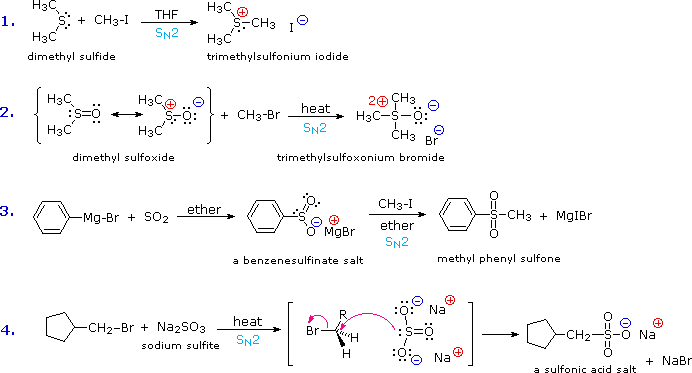
Oxygen assumes only two oxidation states in its organic compounds (–1 in peroxides and –2 in other compounds). Sulfur, on the other hand, is found in oxidation states ranging from –2 to +6, as shown in the following table (some simple inorganic compounds are displayed in orange).
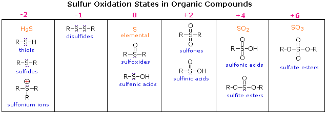
Try drawing Lewis-structures for the sulfur atoms in these compounds. If you restrict your formulas to valence shell electron octets, most of the higher oxidation states will have formal charge separation, as in equation 2 above. The formulas written here neutralize this charge separation by double bonding that expands the valence octet of sulfur. Indeed, the S=O double bonds do not consist of the customary σ & π-orbitals found in carbon double bonds. As a third row element, sulfur has five empty 3d-orbitals that may be used for p-d bonding in a fashion similar to p-p (π) bonding. In this way sulfur may expand an argon-like valence shell octet by two (e.g. sulfoxides) or four (e.g. sulfones) electrons. Sulfoxides have a fixed pyramidal shape (the sulfur non-bonding electron pair occupies one corner of a tetrahedron with sulfur at the center). Consequently, sulfoxides having two different alkyl or aryl substituents are chiral. Enantiomeric sulfoxides are stable and may be isolated.
Thiols also differ dramatically from alcohols in their oxidation chemistry. Oxidation of 1º and 2º-alcohols to aldehydes and ketones changes the oxidation state of carbon but not oxygen. Oxidation of thiols and other sulfur compounds changes the oxidation state of sulfur rather than carbon. We see some representative sulfur oxidations in the following examples. In the first case, mild oxidation converts thiols to disufides. An equivalent oxidation of alcohols to peroxides is not normally observed. The reasons for this different behavior are not hard to identify. The S–S single bond is nearly twice as strong as the O–O bond in peroxides, and the O–H bond is more than 25 kcal/mole stronger than an S–H bond. Thus, thermodynamics favors disulfide formation over peroxide. Mild oxidation of disufides with chlorine gives alkylsulfenyl chlorides, but more vigorous oxidation forms sulfonic acids (2nd example). Finally, oxidation of sulfides with hydrogen peroxide (or peracids) leads first to sulfoxides and then to sulfones.
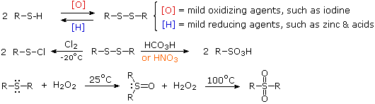
The nomenclature of sulfur compounds is generally straightforward. The prefix thio denotes replacement of a functional oxygen by sulfur. Thus, -SH is a thiol and C=S a thione. The prefix thia denotes replacement of a carbon atom in a chain or ring by sulfur, although a single ether-like sulfur is usually named as a sulfide. For example, C2H5SC3H7 is ethyl propyl sulfide and C2H5SCH2SC3H7 may be named 3,5-dithiaoctane. Sulfonates are sulfonate acid esters and sultones are the equivalent of lactones. Other names are noted in the table above.
The conversion of 1º and 2º-alcohols to aldehydes and ketones is an important reaction which, in its simplest form, can be considered a dehydrogenation (loss of H2). By providing an oxygen source to fix the product hydrogen as water, the endothermic dehydrogenation process may be converted to a more favorable exothermic one. One source of oxygen that has proven effective for the oxidation of alcohols is the simple sulfoxide solvent, DMSO. The reaction is operationally easy: a DMSO solution of the alcohol is treated with one of several electrophilic dehydrating reagents (E). The alcohol is oxidized; DMSO is reduced to dimethyl sulfide; and water is taken up by the electrophile. Due to the exothermic nature of the reaction, it is usually run at -50 ºC or lower. Co-solvents such as methylene chloride or THF are needed, since pure DMSO freezes at 18º. The reaction of oxalyl chloride with DMSO may generate chlorodimethylsulfonium chloride which then oxidizes the alcohol (Swern Oxidation). Alternatively, a plausible general mechanism for this interesting and useful reaction is drawn below.
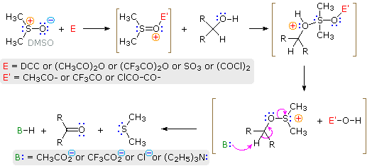
Because so many different electrophiles have been used to effect this oxidation, it is difficult to present a single general mechanism. Most of the electrophiles are good acylating reagents, so it is reasonable to expect an initial acylation of the sulfoxide oxygen. (The use of DCC as an acylation reagent was described elsewhere.) The electrophilic character of the sulfur atom is enhanced by acylation. Bonding of sulfur to the alcohol oxygen atom then follows. The remaining steps are eliminations, similar in nature to those proposed for other alcohol oxidations. In some cases triethyl amine is added to provide an additional base. Three examples of these DMSO oxidations are given in the following diagram. Note that this oxidation procedure is very mild and tolerates a variety of other functional groups, including those having oxidizable nitrogen and sulfur atoms.
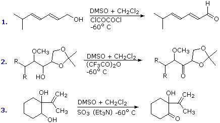
Phosphorous analogs of amines are called phosphines. The chemistry of phosphines and the related phosphite esters is dominated by their strong nucleophilicity and reducing character. The nucleophilicity of trivalent phosphorus results in rapid formation of phosphonium salts when such compounds are treated with reactive alkyl halides. For example, although resonance delocalization of the nitrogen electron pair in triphenylamine, (C6H5)3N, renders it relatively unreactive in SN2 reactions, the corresponding phosphorus compound, triphenylphosphine, undergoes a rapid and exothermic reaction to give a phosphonium salt, as shown below in the first equation. Phosphite esters react in the same manner, but the resulting phosphonium salts (shaded box) are often unstable, and on heating yield dialkyl phosphonate esters by way of a second SN2 reaction (equation 2 below).
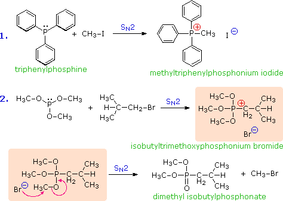
The difference in oxidation states between nitrogen and phosphorus is less pronounced than between oxygen and sulfur. Organophosphorus compounds having phosphorus oxidation states ranging from –3 to +5, as shown in the following table, are well known (some simple inorganic compounds are displayed in green). As in the case of sulfur, the P=O double bonds drawn in some of the formulas do not consist of the customary sigma & pi-orbitals found in carbon double bonds. Phosphorus is a third row element, and has five empty 2d-orbitals that may be used for p-d bonding in a fashion similar to p-p (π) bonding. In this way phosphorus may expand an argon-like valence shell octet by two electrons (e.g. phosphine oxides).
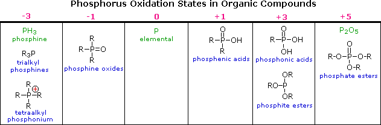
Trivalent phosphorus is easily oxidized. In contrast with ammonia and amines, phosphine and its mono and dialkyl derivatives are pyrophoric, bursting into flame on contact with the oxygen in air. The affinity of trivalent phosphorus for oxygen (and sulfur) has been put to use in many reaction systems, three of which are shown here. The triphenylphosphine oxide produced in reactions 1 & 3 is a very stable polar compound, and in most cases it is easily removed from the other products. Reaction 2 is a general formulation of the useful Corey-Winter procedure for converting vicinal glycols to alkenes.
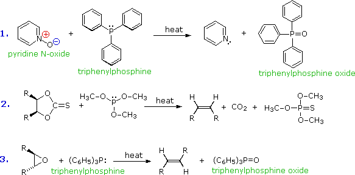
Triphenylphosphine is also oxidized by halogens, and with bromine yields dibromotriphenylphosphorane, a crystalline salt-like compound, useful for converting alcohols to alkyl bromides. As in a number of earlier examples, the formation of triphenylphosphine oxide in the irreversible SN2 step provides a thermodynamic driving force for the reaction.
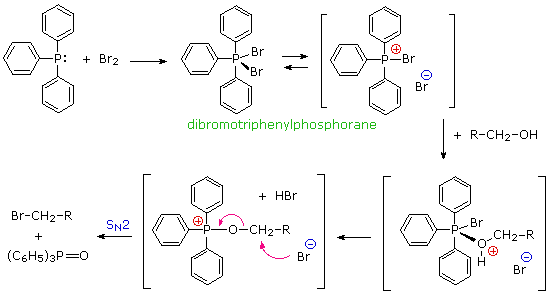
It has been noted that dipolar phosphorus and sulfur oxides are stabilized by p-d bonding. This may be illustrated by a resonance description, as shown here.
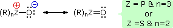
This bonding stabilization extends to carbanions alpha to phosphonium and sulfonium centers, and the zwitterionic conjugate bases derived from such cations are known as ylides. Approximate pKa's for some ylide precursors and related compounds are provided in the following table. The acidic hydrogen atoms are colored red. By convention, pKa's are usually adjusted to conform to the standard solvent water; however, in practice, measurements of very weak acids are necessarily made in non-aqueous solvents such as DMSO (dimethyl sufoxide). The green numbers in the table represent DMSO measurements, and although these are larger than the aqueous approximations, the relative order is unchanged. Note that DMSO itself is the weakest acid of those shown.
Some characteristic preparations of ylide reagents are shown below. Very strong bases, such as butyl lithium, are required for complete formation of ylides. Sodium hydride (NaH), another powerful base, is insoluble in most solvents, but its reaction with DMSO (the weakest acid in the table) generates a strong conjugate base, CH3)S(=O)CH2(–) Na(+), known as dimsyl sodium. This soluble base is widely used for the generation of ylides in DMSO solution.
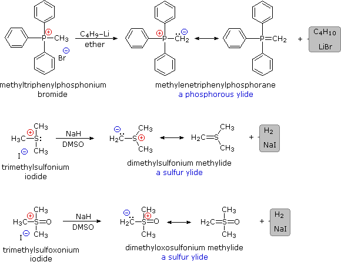
The ylides shown here are all strong bases. Like other strongly basic organic reagents, they are protonated by water and alcohols, and are sensitive to oxygen. Water decomposes alkylidenephosphoranes to hydrocarbons and phosphine oxides, as shown. Oxygen cleaves these ylides in a similar fashion, the alkylidene moiety being converted to a carbonyl compound.
The most important use of ylides in synthesis comes from their reactions with aldehydes and ketones, which are initiated in every case by a covalent bonding of the nucleophilic alpha-carbon to the electrophilic carbonyl carbon. Alkylidenephosphorane ylides react to give substituted alkenes in a transformation called the Wittig reaction. This reaction is illustrated by the first three equations below. In each case the new carbon-carbon double bond is colored blue, and the oxygen of the carbonyl reactant is transferred to the phosphorus. The Wittig reaction tolerates epoxides and many other functional groups, as demonstrated by reaction # 1. The carbanionic center may also be substituted, as in reactions # 2 & 3. A principal advantage of alkene synthesis by the Wittig reaction is that the location of the double bond is absolutely fixed, in contrast to the mixtures often produced by alcohol dehydration. With simple substituted ylides Z-alkenes are favored (reaction # 2). The fourth equation shows a characteristic reaction of a sulfur ylide. Again, the initial carbon-carbon bond is colored blue, but subsequent steps lead to an epoxide product rather than an alkene.
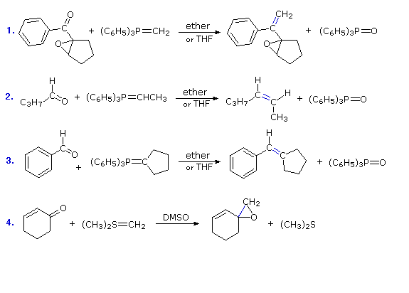
Two other examples of Wittig-like reactions may be seen by clicking the "More Reactions" button. Reaction # 5 illustrates a double Wittig reaction, using a dialdehyde reactant (colored orange). Because of the additional allylic stabilization of the ylide group, the new double bonds (colored blue) have an E-configuration, in contrast to the Z-configuration favored by unstabilized ylides (equation 2). Reaction # 6 shows a related synthesis that employs a phosphonate enolate base as the nucleophile. This is known as the Horner-Wadsworth-Emmons reaction. Here, as with the Wittig reaction, the formation of a stable phosphorus oxygen bond in the phosphate product provides a driving force for the transformation. Again, stabilization of the ylide-like carbanion leads to an E-configuration of the product double bond. These remarkable and useful changes can be explained by the mechanisms displayed by clicking the "Show Mechanism" button. Following the initial carbon-carbon bond formation, two intermediates have been identified for the Wittig reaction, a dipolar charge-separated species called a betaine and a four-membered heterocyclic structure referred to as an oxaphosphatane. Cleavage of the oxaphosphatane to alkene and phosphine oxide products is exothermic and irreversible. Depending on the stability of the starting ylide, the betaine may be formed reversibly and this will ultimately influence the stereochemistry of the alkene product. In contrast to the phosphorus ylides and related reagents, reactions of sulfur ylides with carbonyl compounds do not usually lead to four-membered ring species analogous to oxaphosphatanes. The favored reaction path is therefore an internal SN2 process that leads to an epoxide product. The sulfur leaves as dimethyl sulfide. Additional examples of sulfur ylide reactions, illustrating differences in the reactivity of dimethylsulfonium methylide and dimethyloxosulfonium methylide, are given in the following diagram. Of the two, the oxosulfonium ylide is less reactive and is thought to add reversibly to carbonyl groups, eventually forming the thermodynamically favored product.
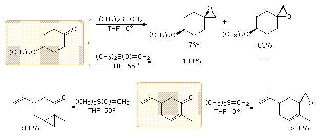
This page is the property of The Edvibe Team. Comments, questions and errors should be sent to contact@edvibe.co.ke. These pages are provided to the IOCD to assist in capacity building in chemical education. 05/05/2013
Because acylation is such an important and widely used transformation, many novel techniques have been developed for this purpose. A few of these are described here.
The ideal acylating reagent would be a carboxylic acid, but the acids themselves are relatively unreactive with nucleophiles. A simple solution to this inactivity, as noted earlier, was to convert the carboxylic acid to a more reactive derivative such as an acyl chloride or anhydride. A less extreme alternative procedure, often used in difficult cases, makes use of reagents which selectively activate a carboxyl group toward nucleophilic substitution. Two such reagents are dicyclohexylcarbodiimide (DCC) and carbonyldiimidazole (Staab's reagent). The following equations provide examples of their use in the preparation of esters, amides, anhydrides and peresters. Indeed, LAH reduction of the imidazolide intermediate generated by the Staab reagent provides a useful preparation of aldehydes from acids. The mechanisms by which these reagents activate carboxylic acids are displayed by clicking the "Show Mechanisms" button. Keep in mind that imidazole is a stronger acid than water and a better leaving group than hydroxide anion, especially if protonated.
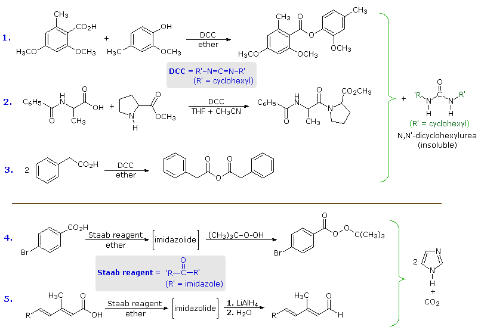
Unstrained neutral amides are notoriously poor acylating agents. However, electrophilic attack usually occurs at oxygen, and 3º-amides are activated by such an event. A useful application of this concept is the generation of an electrophilic formylating reagent by reaction of dimethylformamide (DMF) with phosphorus oxychloride, as shown in the green shaded box below. Note that the structural formula of the resulting complex resembles that of an acyl chloride, with the iminium double bond providing additional electrophilic character. This reagent, known as the Vilsmeier-Haack reagent, attacks nucleophilic substrates to generate formylated products. Two examples are shown below the reagent box.
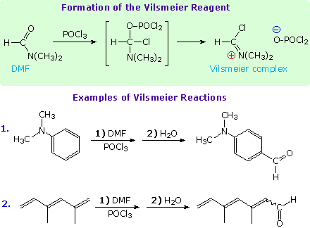
Acyl chlorides having at least one alpha-hydrogen undergo elimination of HCl on treatment with 3º-amine bases (1st equation below). The resulting carbon-carbon double bond has a cumulative relationship to the carbonyl double bond, and compounds of this kind are called ketenes. Elimination of vicinal dichlorides by reaction with zinc dust is also possible (2nd equation), and thermal dehydration of acetic acid generates the parent structure, named ketene (3rd equation).
1. R2CHCOCl + R'3N R2C=C=O (a dialkylketene) + R'3NH(+) Cl(–)
2. Cl3CCOCl + Zn (dust) Cl2C=C=O (dichloroketene) + ZnCl2
3. CH3CO2H + AlPO4 & heat H2C=C=O (ketene) + H2O
Ketenes are reactive intermediates which combine rapidly with nucleophiles to give carboxylic acid derivatives or, if no other reaction is possible, eventually dimerize (or polymerize). Some characteristic reactions of ketene are shown in the following diagram. The β-lactone structure at the lower left is a stable compound known as diketene.
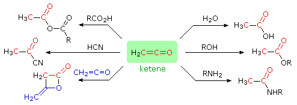
A vinylagous relationship is one in which a double bond extends by conjugation an interaction between two sites in a molecule, or between two reacting species. There are many examples of this phenomenon, as the following discussion will demonstrate.
The carboxyl group is an outstanding example of the interaction of two functional groups (hydroxyl and carbonyl) when they are bonded together. One manifestation of this interaction is the enhanced acidity of the carboxyl group relative to an isolated hydroxyl group (more than ten powers of ten). This increase in acidity was explained earlier by resonance stabilization of the carboxylate anion conjugate base. As shown below (first equation), this results in negative charge delocalization over two oxygens as compared with full charge localization on an alkoxide oxygen. A carbon-carbon double bond can conjugatively link hydroxyl and carbonyl groups so that the corresponding alkoxide base is similarly stabilized by charge delocalization. The second equation illustrates this vinylagous relationship, and a green box identifies the double bond that establishes the vinylagous link. A third resonance contributor, which has the negative charge on the central carbon atom, has been omitted from this drawing, but is an important factor in alkylation reactions of beta-dicarbonyl compounds.
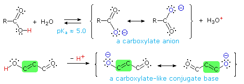
Some examples of vinylagous acids are shown below, together with their pKa values. The first compound, the enol of 1,3-cyclohexanedione, fits the general example outlined above, and has an acidity comparable to acetic acid. The second example (tropolone) is triply vinylagous. Although it is less acidic than a carboxylic acid, it is much more acidic than an alcohol and even a thousand times greater than phenol.
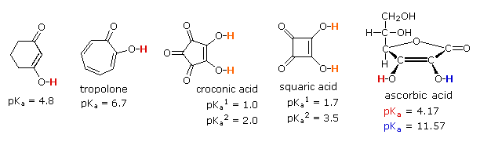
The third and fourth examples listed are extraordinary cases in which vinylagous activation enhances the acidity of two hydroxyl functions in the same molecule. Because of symmetry, it is not possible to identify which is more acidic, but the first pKa ranks these acids stronger than phosphoric acid. The high acidity of the second hydroxyl function is even more surprising, and undoubtedly reflects the fact that both conjugate bases are stabilized by charge delocalization over a different set of oxygen atoms. The case of ascorbic acid, commonly known as Vitamin C provides the last example. Here it should be clear that the beta-hydroxyl group (the red hydrogen) is vinylagously activated by the carbonyl function, and is a stronger acid than acetic acid. The alpha-hydroxyl group (blue hydrogen) is part of an enol, and is therefore expected to have an acidity similar to phenol.
If the hydroxyl group of a vinylagous acid is replaced by an amino group or an alkoxyl group the resulting compounds may be classified as vinylagous amides and esters respectively. The following general formulas illustrate these terms. As expected from the electron interactions shown by the resonance formulas, the properties of such compounds are similar to amides and esters. The basicity of a vinylagous amide, for example, is much less than that of an enamine.
Vinylagous Amide
R2N–C=C–C=O
R2N(+)=C–C=C–O(–)
Vinylagous Ester
RO–C=C–C=O
RO(+)=C–C=C–O(–)
The facile elimination of water from aldol products was noted earlier. Either acid or base catalysis is effective, suggesting that enol species may be involved in these elimination reactions. As shown in the following diagram, these enolic intermediates are vinylogues of carbonyl hydrates, a function known to undergo rapid and reversible loss of water.
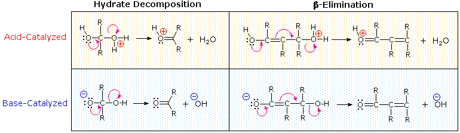
One of the largest and most diverse classes of reactions is composed of nucleophilic additions to a carbonyl group. Both reversible and irreversible addition reactions have been described, and in all cases the initial step involved covalent bonding of a nucleophile to the electrophilic carbon atom of the carbonyl group. As noted earlier, conjugation of a double bond to a carbonyl group transmits the electrophilic character of the carbonyl carbon to the beta-carbon of the double bond. A resonance description of this transmission is shown below. From this formula it should be clear that nucleophiles may bond either at the carbonyl carbon, as for any aldehyde, ketone or carboxylic acid derivative, or at the beta-carbon. These two modes of reaction are referred to as 1,2-addition and 1,4-addition respectively, and will be displayed here when the "Nucleophilic Addition" button is clicked.
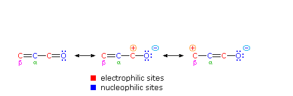
The nucleophile in this scheme is shown with a negative charge, which is neutralized in the addition products by treatment with water. Neutral nucleophiles such as 1º and 2º-amines may also add in the same manner, and do not require a neutralization step. The term "1,4-addition" is applied to the product of conjugate addition (initial nucleophile bonding at the beta-carbon) because the product initially formed is presumably the unstable enol tautomer.
Reversible addition reactions of nitrogen, oxygen and sulfur nucleophiles to unsaturated carbonyl and nitrile compounds normally give 1,4-addition products rather than their 1,2-addition isomers. This preference for conjugate addition may be attributed in part to the thermodynamic advantage of addition reactions to carbon-carbon double bonds over additions to a carbonyl function. This factor was noted earlier in the chapter on aldehydes and ketones. Although nucleophilic addition reactions to alkenes are usually slow, conjugation with a carbonyl or nitrile function vinylagously activates the beta-carbon, resulting in rapid addition. It is likely that rapid 1,2-addition occurs as well, but because it is reversible, the thermodynamically favored 1,4-product accumulates. Several examples of these conjugative addition reactions are given below.
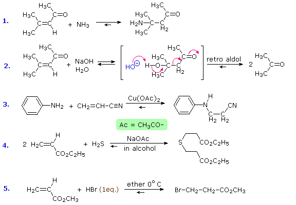
The reaction of 4-methyl-3-penten-2-one with hydroxide ion (# 2) is interesting because the 1,4-addition product is the aldol product from acetone. A retro (or reverse) aldol reaction generates acetone as the chief product. The third and fourth reactions demonstrate the use of acetate salts as catalysts for some conjugative additions, and the last reaction is an acid-catalyzed 1,4-addition (bromide anion is the nucleophile).
Some typical aldehyde and ketone substitution reactions that proceed from 1,2-addition intermediates still take place in the expected manner when conjugated double bonds are present. Most of these involve a final dehydration that is only possible if an initial 1,2-addition has occurred. As demonstrated by the following examples, acetals (# 1 & 2), imine derivatives (# 3) and enamines (# 4) can all be prepared in the usual way.
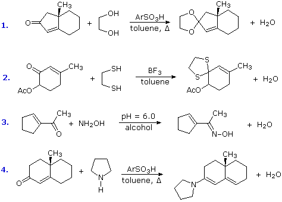
Conjugative addition of carbon nucleophiles to unsaturated esters, ketones, nitriles, sulfones and other activated double bonds is a useful synthetic method known as the Michael reaction. In combination with alkylations and condensations, the Michael reaction may be used to construct a wide variety of complex molecules from relatively simple starting materials. The carbon nucleophiles used in the following examples include cyanide ion, sodium diethylmalonate and the conjugate base of cyclohexane-1,3-dione. These anions are sufficiently stable that their addition reactions may be presumed reversible. If this is so, the thermodynamic argument used for hetero-nucleophile additions would apply here as well, and would indicate preferential formation of 1,4-addition products. Cyanide addition does not always follow this rule, and aldehydes often give 1,2-products (cyanohydrins). In each case the initial reaction is a Michael addition, and the new carbon-carbon bond is colored magenta. Any subsequent bonds that are formed by other reactions are colored orange.
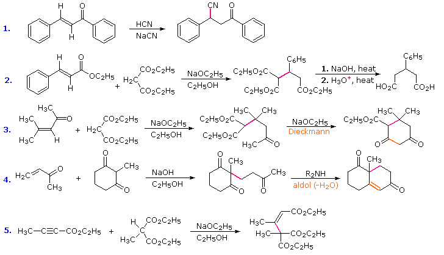
In all the above examples the vinylagous electrophile (Michael acceptor) is drawn on the left, and the carbon nucleophile (Michael donor) is to its right. By clicking the "More Examples" button, four additional Michael reactions will be displayed. These illustrate the use of unsaturated nitrile and extended vinylagous acceptors, and enamine and nitroalkane donors.
Some reagents, such as metal hydrides and organometallic reagents, add to aldehydes, ketones and esters in an irreversible fashion, and it is likely that similar reactions of vinylogous functions will also be irreversible. Since 1,2-additions to the carbonyl group are fast, we would expect to find a predominance of 1,2-products from these reactions. For the hydride reductions shown in the first three equations below, this is the case. However, not all compounds of this kind give clean 1,2-reduction. Lithium aluminum hydride often reacts further with allylic alcohols, reducing the carbon-carbon double bond as well. It must therefore be used with care. Sodium borohydride may also give conjugate addition products in some cases. Fortunately, this can be prevented by adding cerium trichloride (CeCl3) to the reaction mixture. If the 1,4-reduction product is desired it is best obtained by using a dissolving metal reduction.
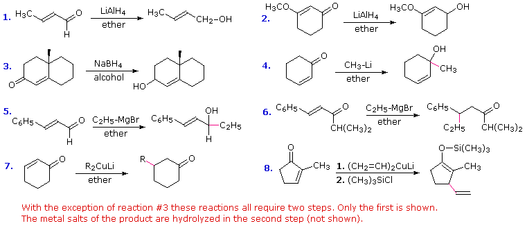
The remaining five equations displayed here describe the use of various organometallic reagents. Alkyl lithium compounds usually give 1,2-addition products, as shown in equation # 4. Grignard reagents, on the other hand, may add in both a 1,2- and 1,4-manner, depending on the substitution at the electrophilic sites. Unsaturated aldehydes usually give 1,2-addition, as in equation # 5. An equivalent ketone having a large carbonyl substituent, as in equation # 6, gives 1,4-addition, and if the isopropyl group is replaced by a smaller methyl group a nearly 50:50 mixture of 1,2- and 1,4-addition products is obtained. Grignard reactions may be shifted to a 1,4-addition mode by adding copper salts, but a better strategy is to use a Gilman reagent, as shown in the last two equations. The metal enolate that results from this conjugate addition may be quenched by hydrolysis, as in equation # 7, trapped as a silyl enol ether, as in equation # 8, or alkylated by a suitable alkyl halide.
The increased acidity and reactivity of C-H bonds alpha to a carbonyl group has been described. This characteristic is critical to useful synthetic reactions such as the aldol and Claisen condensations, as well as enolate alkylation. A vinylagous or doubly vinylagous relationship results in a similar activation of a more remote carbon, which is illustrated by the resonance structures in the green shaded box below. Here the negative charge on the conjugate base is delocalized at three atoms, the oxygen and the alpha and gamma carbons. Some reactions of such extended enolate anions with electrophilic reagents are shown below the resonance diagram.
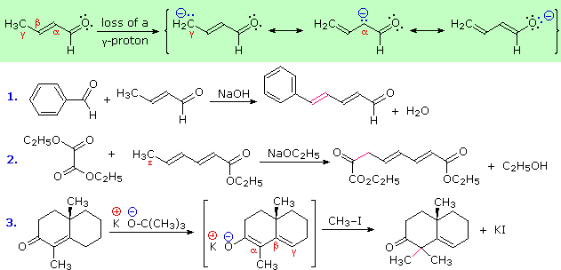
Examples # 1 and 2 correspond to aldol and Claisen condensations respectively. The new carbon bonds are colored magenta. In the first case the dienolate anion can react with an electrophile at either the alpha or gamma carbons. The reversibility of the aldol reaction favors formation of the most stable product, which is the extended conjugated dienal formed by condensation at the gamma location. The second condensation is also reversible and takes place at the end (epsilon) carbon. The third example is an alkylation and is irreversible. Reaction is fastest at the alpha carbon atom of the dienolate anion, and once an alkyl group is bonded there it will not change location.
Eight reactions using chemical reactions similar to those described above and in the dissolving metals reduction section are displayed here. Answers will be given by clicking the appropriate button.
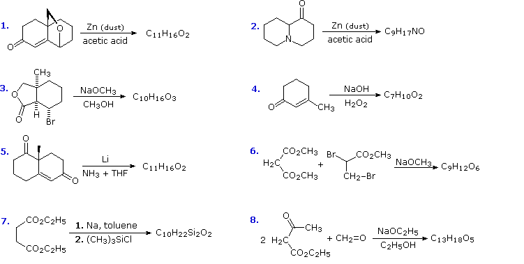
Differences in the carbonyl stretching frequencies of carboxylic acid derivatives provide a useful diagnostic tool for distinguishing these compounds. Acetone is a useful reference compound (strong absorption at 1715 cm-1), since the methyl group substituents exert a minor inductive effect and do not carry a non-bonding electron pair. Electronegative substituents such as Cl, O & N withdraw σ-electron density from the carbonyl carbon atom, and also have a non-bonding electron pair(s) that can donate electron density by p-π overlap (resonance delocalization). As shown in the following figure, the inductive withdrawal of electron density increases the stretching frequency of the carbonyl group, whereas p-π overlap decreases the stretching frequency.
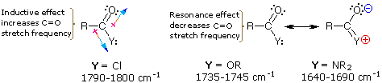
Chlorine exerts a strong inductive effect, but p-π delocalization is minor (note that chlorine substituents deactivate benzene in electrophilic substitution reactions). Oxygen also exerts a strong inductive effect, but the resonance effect is also strong and almost balances the former. Nitrogen is less electronegative than chlorine or oxygen, but its p-π resonance delocalization is very strong. Note that both oxygen and nitrogen substituents activate benzene toward electrophilic substitution reactions.
We have noted that nucleophilic substitution reactions of carboxylic acid derivatives proceed by an addition-elimination mechanism. The reactivity of these derivatives toward nucleophiles in general should reflect the electrophilic character of the carbonyl carbon, so it is not surprising that those compounds having the least p-π delocalization of charge (i.e. acyl chlorides) are most reactive. In other words, those compounds with the highest C=O stretching frequencies are the most reactive acylating reagents. Of course, these acylation reactions are also are influenced by and reflect the reactivity of the nucleophilic reactant. A useful way of evaluating the relative reactivities of anionic nucleophiles is based on the pKa's of their corresponding conjugate acids. Weak acids have strong (reactive) conjugate bases, and this often (but not always) parallels nucleophilicity. As expected, negatively charged nucleophiles are generally much more reactive than the corresponding neutral compounds.
The interplay of these two reactivity profiles (nucleophile and acyl derivative), in the context of the addition-elimination mechanism, provides a useful overview of this important reaction class. Four examples are illustrative:
i) Combination of a very reactive acylating reagent (an acyl chloride) with a strong nucleophile (R'O(–)) results in rapid reaction, even at ice bath temperatures. Both steps in this transformation appear to be fast, and the ester and chloride anion products are both stable.
ii) If the poorer neutral nucleophile ROH is combined with the same reactive acylating reagent a slower, but still spontaneous, reaction will occur. The first step is probably slower than the second, and the products are an ester together with solvated HCl.
iii) If a moderate nucleophile (e.g. R''NH2) and a moderate electrophile (e.g. an ester) are combined a reaction will often take place, but it may be rather slow. In this case the products (an amide and an alcohol) are both stable, and the first step is probably rate determining.
iv) The products from (iii) are a poor nucleophile (R'OH) and a poor electrophile (an amide). The reverse acylation in this case is so slow as to be nonexistent, presumably due to a high activation barrier to the first (addition) step. Indeed, if water were used as the nucleophilic reactant (R'OH = H2O), the hydrolysis products would be stabilized by salt formation. Despite this thermodynamic advantage, hydrolysis reactions of amides are usually very slow.
Unreactive combinations, such as that in case iv, can often be induced to react by heating or by introduction of acid or base catalysts. Heating provides energy to overcome a prohibitive activation energy barrier. Acid and base catalysts serve to generate more reactive species (electrophiles or nucleophiles) that facilitate the first step. In case iv these catalysts might function as follows:
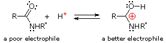
Note also that acidic or basic reaction conditions serve to stabilize one or the other of the hydrolysis products as a stabilized ion (ammonium or carboxylate).
The most common methods for converting 1º- and 2º-alcohols to the corresponding chloro and bromo alkanes (i.e. replacement of the hydroxyl group) is by treatment with thionyl chloride and phosphorus tribromide respectively. These reagents are generally preferred over the use of concentrated HX due to the harsh acidity of these hydrohalic acids and the carbocation rearrangements associated with their use. Of course, it is possible to avoid such problems by first preparing a mesylate or tosylate derivative, followed by nucleophilic substitution of the sulfonate ester by the appropriate halide anion. In this two-step approach, a clean configurational inversion occurs in the first SN2 reaction; however, the resulting alkyl halide may then undergo repeated SN2 halogen exchange reactions, thus destroying any stereoisomeric identity held by the initial carbinol carbon. For these and other reasons, alternative mild and selective methods for transforming such alcohols by nucleophilic substitution of the hydroxyl group have been devised. It should be noted that 3º-alcohols are not good substrates for the new procedures.
Despite their general usefulness, phosphorous tribromide and thionyl chloride have shortcomings. Hindered 1º- and 2º-alcohols react sluggishly with the former, and may form rearrangement products, as noted in the following equation.
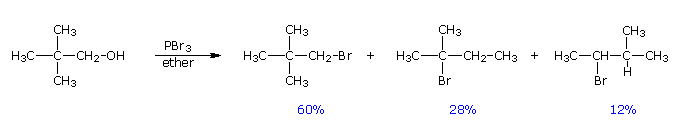
By clicking on this equation, an abbreviated mechanism for the reaction will be displayed. The initially formed trialkylphosphite ester may be isolated if the HBr byproduct is scavenged by base. In the presence of HBr a series of acid-base and SN2 reactions take place, along with the transient formation of carbocation intermediates. Rearrangement (pink arrows) of the carbocations leads to isomeric products. Reaction of thionyl chloride with chiral 2º-alcohols has been observed to proceed with either inversion or retention. In the presence of a base such as pyridine, the intermediate chlorosulfite ester reacts to form an "pyridinium" salt, which undergoes a relatively clean SN2 reaction to the inverted chloride. In ether and similar solvents the chlorosulfite reacts with retention of configuration, presumably by way of a tight or intimate ion pair. This is classified as an SNi reaction (nucleophilic substitution internal). The carbocation partner in the ion pair may also rearrange. These reactions are illustrated by the following equations. An alternative explanation for the retention of configuration, involving an initial solvent molecule displacement of the chlorosulfite group (as SO2 and chloride anion), followed by chloride ion displacement of the solvent moiety, has been suggested. In this case, two inversions lead to retention.
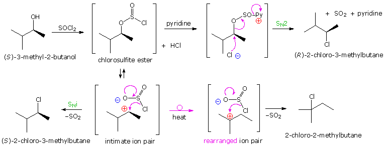
Another characteristic of thionyl chloride reactions is their tendency to give allylic rearrangement products with allylic alcohols. This fact is demonstrated by the following equations. Reactions of this kind have been classified as SNi', where the prime mark indicates an allylic character to the internal substitution. They may also be considered retro-ene reactions, a special class of pericyclic reactions. A similar substitutive rearrangement also occurs with propargyl alcohols, as shown by clicking on the equations.
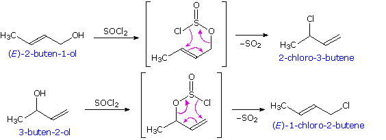
The ability of phosphorous to assume many different valencies or oxidation states was noted elsewhere. The nucleophilicity of trialkyl phosphines allows them to bond readily to electrophiles, and the resulting phosphonium ions may then bond reversibly to other nucleophiles, especially oxygen nucleophiles. The use of phosphorous ylides in the Wittig reaction is an example of this reactivity. The reaction of triphenylphosphine with halogens further illustrates this hypervalency. As shown in the following diagram, triphenylphosphine (yellow box on the left) reacts to form a pentavalent dihalide, which is in equilibrium with its ionic components in solution.
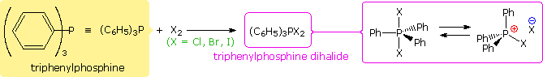
Chemists have made use of these and similar reagents to effect the mild conversion of alcohols to alkyl halides with clean inversion of configuration. As with other OH substitution reactions, an inherently poor leaving group (hydroxide anion) is modified to provide a better leaving group, the stable compound triphenylphosphine oxide. Two such reactions are shown in the following diagram. In this way even sluggish alcohols that are prone to rearrangement (e.g. neopentyl alcohol) are converted to their corresponding halides. The instability of vicinal diiodides relative to their double bond analogs, is the driving force for a novel transformation of vic-glycols to their corresponding alkenes. An example will be displayed by clicking on these equations. The allylic rearrangement observed in thionyl chloride is similarly avoided by using triphenylphosphine dichloride, or alternatively, by a two step procedure by way of a sulfonate ester. Click on the diagram a second time for an example.
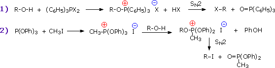
The Japanese chemist, O.Mitsunobu, devised a general and exceptionally versatile variant of hypervalent phosphorous chemistry that has been applied to wide selection of alcohols. This method, which now carries his name, uses a reagent mixture consisting of triphenylphosphine, diethyl azodicarboxylate (DEAD) and a moderate to strong acid. The steps leading to hydroxyl substitution are outlined in the following diagram. It should be noted that the nucleophile involved in the final SN2 substitution may be the conjugate base of the acid component or a separate species. A common use of the Mitsunobu reaction is to invert the configuration of a 2º-alcohol. This application usually employs benzoic acid or a benzoate salt, and the resulting configurationally inverted ester is then hydrolyzed to the epimeric alcohol. An example of this procedure will be displayed by clicking on the diagram.
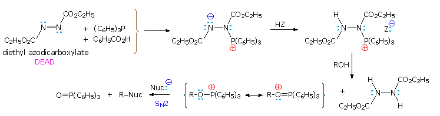
In addition to effecting configurational inversion of carbinol sites, the Mitsunobu reaction has also been used to introduce the azide precursor of amines and for the intramolecular preparation of cyclic ethers. Examples are shown below.
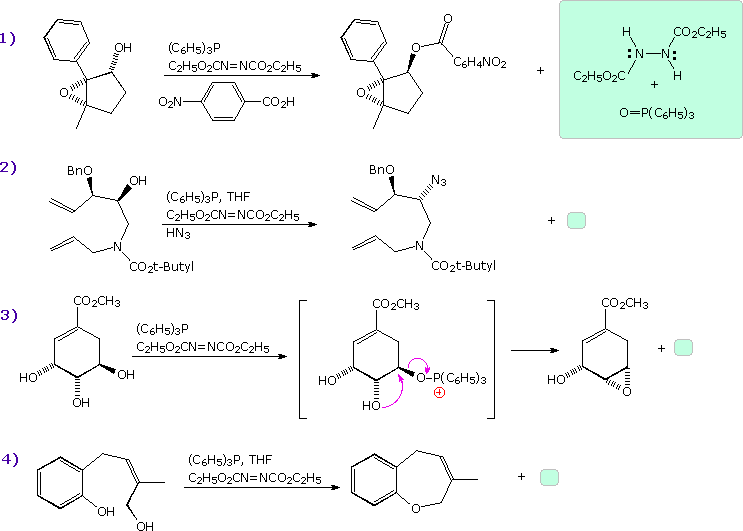
Thanks to their relative lack of chemical reactivity, ethers have proven to be useful protective groups for alcohols and phenols. By converting a hydroxyl function to an ether, its acidity and ease of oxidation (in the case of 1º and 2º-alcohols) can be suppressed to such a degree that normally incompatible reactions, such as those employing Grignard reagents, may be carried out. As outlined in the following diagram, many ether protective groups have been introduced to serve this purpose. Most of these are prepared by acid-catalyzed addition to an alkene or by Williamson alkylation by a suitable alkyl halide. Acronyms are used for common protective groups, an example being the THP (tetrahydropyranyl) ethers prepared from dihydropyran (DHP), as shown at top left.
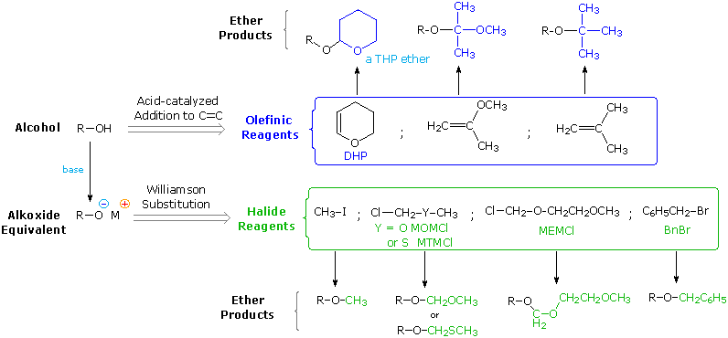
Whenever a protective or blocking group is used to facilitate a synthetic operation, it normally must be removed once the operation is complete. In this respect it is useful to have an assortment of protective groups for which different chemical conditions accomplish this cleavage. The protective groups listed above provide illustrations. Two of the acid-catalyzed addition reactions, shown at the top left, generate acetal derivatives incorporating the alcohol moiety. These acetals may be hydrolyzed by aqueous acid, with the THP derivative reacting more rapidly than the acetone analog. The top right derivative is a tert-butyl ether, and this undergoes acid-catalyzed cleavage under mild conditions in the absence of water (e.g. E1 elimination by CF3CO2H at 0 ºC). The MOM (methoxymethyl) and MEM (2-methoxyethoxymethyl) derivatives shown at the bottom are also acetals, but they are normally prepared under nonacidic conditions. Of course, acid-catalyzed hydrolysis cleaves these acetals, but the MEM derivatives are usually removed by treatment with ZnBr2 or TiCl4 in methylene chloride solution. The methylthiomethyl analog (MTM ether) is cleaved by mild treatment with aqueous silver or mercury salts. Benzyl ethers (shown below on the right) may be removed under a variety of conditions, including catalytic (Pd) hydrogenolysis, dissolving metal reduction (Na in NH3) and HBr (mild).
The use of protective groups in a multistep synthesis is shown in the following diagram. Both hydroxyl groups in the top left compound are transformed to ethers (colored blue) to prevent them from perturbing subsequent reactions. First, the less hindered 1º-alcohol is converted to a THP derivative. The less reactive 3º-alcohol is then protected as a MEM ether.
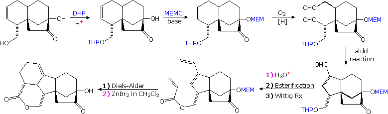
A series of synthetic operations follow, and eventually the THP group must be removed so that an acrylic ester may be made. Aqueous acid treatment (1) does this, leaving the MEM group in place. Finally, this protective group is removed by Lewis acid treatment (2).
Alcohols react rapidly with trimethylsilyl chloride to give trimethylsilyl (TMS) ethers. Amine bases, such as triethylamine, pyridine or imidazole, are added to scavenge the HCl produced in the reaction. Other trialkylsilyl chlorides have been used in this reaction, as illustrated by the following equation.
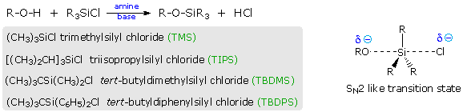
Unlike 3º-alkyl halides, these chlorosilanes undergo nucleophilic substitution by a mechanism similar to the SN2. The exceptional strength of the Si–O bond combined with longer C–Si bond lengths (less steric crowding) serve to stabilize such transition states (shown on the right). Indeed, a pentavalent difluoride anion of this kind has been isolated and characterized. The Si–F bond is substantially stronger than the Si–O bond, and helps to stabilize this species. By clicking on the above the diagram its structure will be displayed. TMS derivatives are rather easily hydrolyzed to their alcohol precursors, but the bulkier silyl ethers are more resistant and are stable over a wide pH range. These protective groups are readily cleaved by fluoride anion, often introduced as a tetraalkylammonium salt. Enolate anions react with trialkylsilyl chlorides, generating silyl enol ethers by substitution at oxygen. These derivatives have proven useful as enolate anion surrogates.